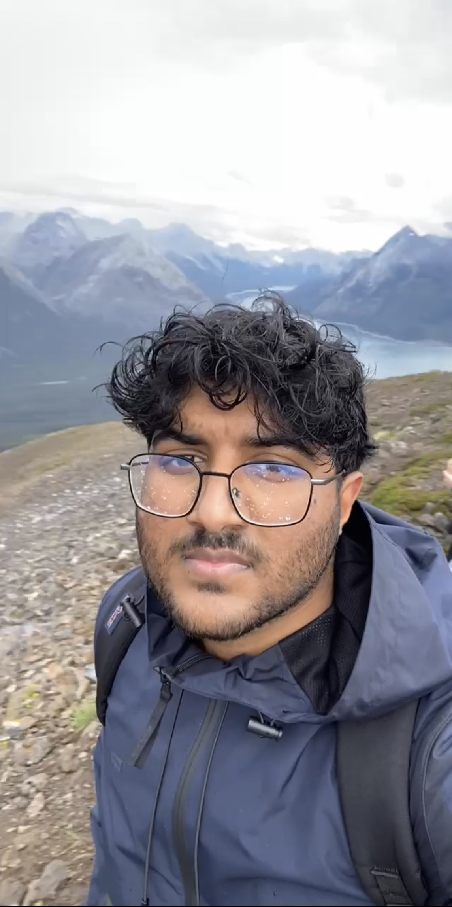

Jan – Dec 2026 (1 Year)Ottawa, ON
Software Developer Intern
- AI Agents for CI and Build & Delivery
- Radio Log Anomaly Detection
- DevOps

University of Alberta - Dr. Nima Shirzad-Ghaleroudkhani
Hui Zuo, Thasanka Kandage, Hongyang Xu, Nima Shirzad-Ghaleroudkhani, Qipei Mei, José Fiestas and Luis A. Bedriñana · ISARC 2026 · Technical Paper #1467
University of Alberta - Renewable Thermal Lab - Dr. Taha Manzoor
T. Kandage, M. S. Shoaib, M. T. Manzoor · ASME ES 2025, AI for Energy Sustainability I · Technical Paper #155317 · Presented
Hub for Neuroengineering Solutions
Scraper for every fighter, event, and fight stat on the official UFC site. 1,500+ views, 300+ downloads on Kaggle
Calculate mortar range from in-game coordinates.
Reads a Sudoku from an image and solves it